Database Maintenance
In this lesson, you learn about several database maintenance tasks that you can perform to keep your database updated, backed up, and secure.
Contents
In previous lessons, you learned that Alpha Anywhere maintains and updates indexes, adjusting their ordered list of selected keys, whenever you add, change, or delete records. However, certain events can corrupt your indexes; for example, if you improperly exit Alpha Anywhere, such as turning off your computer while Alpha Anywhere is running, or if a power failure occurs while Alpha Anywhere is updating an index.
When an index becomes corrupted, you might notice that records do not appear as expected. For example, a record that you can see in a default browse does not appear on a report.
Some database problems can be traced to corrupted or out-to-date indexes. If you have any doubt about the integrity of your indexes, you should update them manually. Selecting Update Indexes to rebuild the indexes associated with a table is likely to fix the problem. For a set, Update Indexes updates the indexes for all the tables in the set.
To update or rebuild an index:
Right-click on a table in the Control Panel, and select Update Indexes from the right-click menu, or select Table > Update Indexes from the menu bar. If you receive index file error messages while working with a table, or if some of the records appear to be missing or duplicated, you can use the Define Indexes option to rebuild the index.
Right-click on a table in the Control Panel, and select Define Indexes from the right-click menu, or select Table > Define Indexes from the menu bar. The Index Builder appears.
-
Click Build. An Alpha Anywhere message appears.
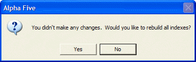
- Click Yes. Alpha Anywhere rebuilds the indexes.
For larger tables, a status bar displays the progress as the indexes are updated. Indexes for smaller tables are rebuilt so quickly that no status bar appears.
To back up a database:
Open the Control Panel.
-
Select Tools > Backup/Restore Database > Backup Database. The Backup dialog box appears.
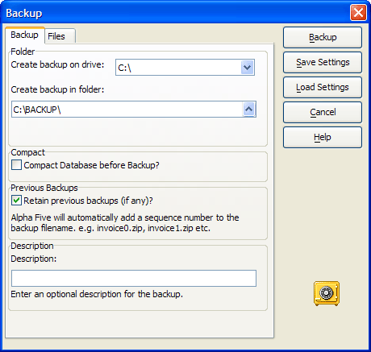
Select the drive and directory for the backup files. Backup files are best saved separately from the working files, such as on a CD, in a zip file, or in some other remote location.
Check Compact Database before Backup.
-
Click Save Settings. The Save Settings dialog box appears. Picture
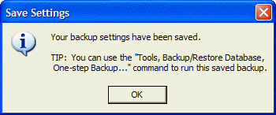
After you back up your database files for the first time and save your settings, Alpha Anywhere advises that you can use a one-step backup in the future.
Click OK.
In the Backup dialog box, click Backup. A Backup confirmation window appears.
Click View the Backup Log to see the location and date of backed up files.
Click Close.
{kind=link}
Once you have saved your backup settings, you can compact and zip the database in one step.
To perform a one-step backup:
Open the Control Panel.
Select Tools > Backup/Restore Database > One-Step Backup. A Backup confirmation window appears.
Click View the Backup Log to see the location and date of backed up files. Alpha Anywhere compacts and zips the database for minimum storage requirements.
Click Close.
In the next procedure, you provide an Alpha Anywhere setting to create weekly database backups. If your database gets very frequent use, you might want to back it up daily.
To create periodic backups:
Open the Control Panel.
Select View > Settings > Database > Backup Database.
-
The Settings dialog box appears.
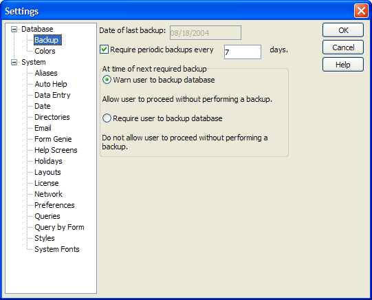
Check Require periodic backups every and enter "7" days. You can specify whether Alpha Anywhere issues a backup reminder or makes performing a backup a requirement for use.
Undeleting Records
To undelete records:
Right click on the table in the Table/Set tab of the Control Panel.
Select Utilities > Undelete Records....
Optionally check Mark records that are undeleted. This gives you the opportunity to easily identify the records that you have undeleted.
Optionally select Range of records and enter a Start Record # and End Record #.
Click OK to undelete the selected records.
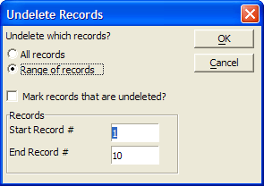
When designing forms and reports, the size of the data dictionaries, the DDD and SET files, grows over time as you continue to make edits to the objects in your database. It is a good practice to periodically remove the extra bulk by compacting the database.
The Compact Database command packs all tables and compresses the data dictionary files. You can check the size of the database before and after compacting to see the file size reduction. You can also select to compact the database when you back it up.
To compact a database:
Open the Control Panel.
Close all Forms, Operations, and any dialog that may have a table open. Alpha Anywhere cannot perform a compact operation on tables with open Forms.
Select File > Database Compact. Alpha Anywhere completes the Compact Database Operation.
The Pack Operation removes deleted records from the database and compresses memo fields. You should pack tables periodically so that they take up less space and to help database operations run more quickly.
After packing a table, you can no longer undelete records. Also, if you select Compact Database before Backup in the Backup dialog box, Alpha Anywhere packs the records and you cannot undelete them.
To pack a database:
Open the Control Panel.
-
Right-click on a table, and select Pack from the right-click menu. An Alpha Anywhere warning appears. Picture
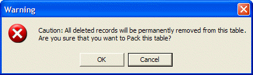
Click OK. A Pack confirmation window appears.
{kind=link}
Alpha Anywhere lets you create a snapshot of your database, so that you can go back to a particular database backup. For example, the backup you made on June 25th, 2000 at 4.35 p.m. You can select the specific database backup to restore, or select to back up and restore individual files.
To restore an open database:
Open the Control Panel.
Select Tools > Backup/Restore Database > Restore Database. The Restore Database dialog box appears. Picture
{kind=link}
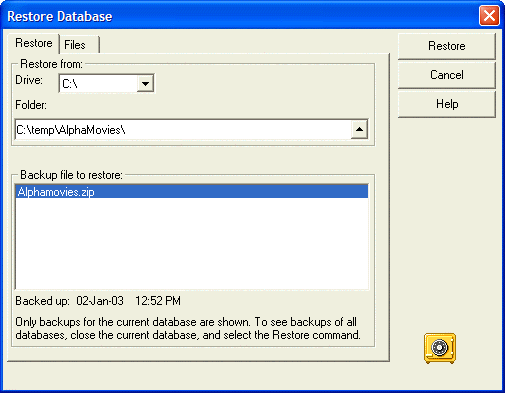
Alpha Anywhere displays the backup files for the current database.
Select the backup files to restore, and click Restore.
To restore any backed up database:
Close any open database, and select Tools > Restore Database from the Alpha Anywhere menu bar.
Use the Restore Database dialog box to specify the database files to restore.
Alternatively, you can use the Alpha Anywhere Welcome screen to select a database to restore.
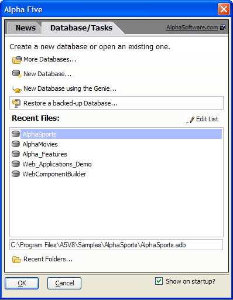
Alpha Anywhere has a security framework that lets you create a Master Password for a Database Administrator, and define separate or shared user accounts and passwords.
To setup database security:
Open the database.
-
Select Tools > Security > Set Database Password. The Set Database Master Password dialog box appears.
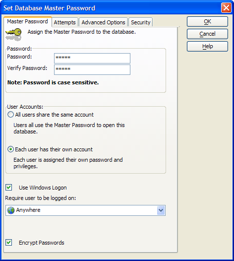
If you define individual user accounts, you specify the user name, password, and an optional startup script for when that user logs on. This also lets you define different startup menus for each application user.
Enter and verify a Master password, and click OK. A Master Password confirmation window appears. Picture
{kind=link}
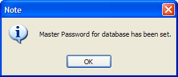
Click OK. If you specify that a database has a password, Alpha Anywhere displays the Password screen when you open that database.
Select Tools > Security, to select or change the following security options.
Change Master Password
Change Security Settings
Remove Database Password
Customize Logon Dialog
Encrypt/Decrypt Tables
Define Users and Groups
Select Define Users and Groups to specify the group to which each user belongs.
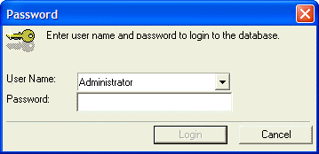
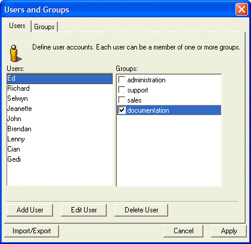
For example, you can specify that Tom, Fred, and Harry are members of the Accounting group.
The user account information is stored in a User Accounts File. The User Accounts File can either be specific to a particular database, or you can specify a shared User Account File so that each of your databases has the same user and group information.
For more detailed information about setting up security for your Alpha Anywhere application, see Startup Event Sequence and Setting Up Database Security.
Once you have set a Master Password for a database, you can encrypt individual tables in the database. Once a table has been encrypted, you can use it normally within the database, but you will not be able to open the database in other contexts, such as with Microsoft Excel, or use it with other software programs that can read DBF files.
To encrypt database tables:
With the database open, select Tools > Security > Encrypt/Decrypt Tables. The Encrypt/Decrypt Tables dialog box appears.
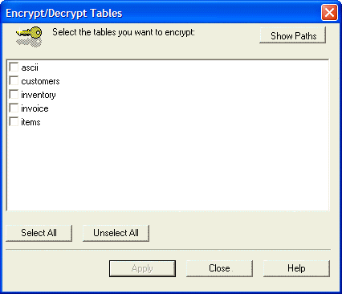
Select the tables to encrypt, and click Apply.
In this lesson you learned about updating and rebuilding indexes, packing and compacting your database, backing up and restoring your database, and providing database security using password protection and table encryption.
What's Next?
See Action Scripting to learn about creating Action Scripts and how you can use them to customize your database application.